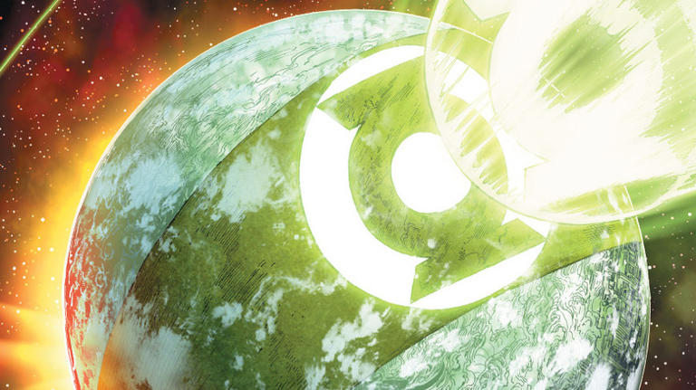

In-Universe History · 1985
Mogo Doesn't Socialize
The Corps' most elusive member is a living planet.

1985
The story
Some Lanterns never show up to Corps meetings, and the reasons are stranger than you'd guess. That was the framing of "Mogo Doesn't Socialize," the beloved backup story in Green Lantern (vol. 2) #188 (May 1985) by Alan Moore and Dave Gibbons — told by veteran Tomar-Re to the rookie Arisia, on the eve of the Corps' greatest trials.
The tale follows Bolphunga the Unrelenting, an intergalactic bounty hunter who lands on a lush jungle world hunting the legendary Lantern called Mogo. He searches for months — and finds no one. Only when he studies a map of the planet's forests does the truth land: the forests spell out the Green Lantern insignia. Mogo isn't hiding on the planet. Mogo is the planet — a sentient world whose gravity would shatter any world it tried to visit. That's why Mogo doesn't socialize.
The six-page story became one of the most beloved in Corps history, and Mogo grew far beyond a punchline. The living planet guides lost rings to new bearers, anchors the Corps' power, and stood against the Blackest Night itself. When Kilowog later said "I guess Mogo does socialize after all," every longtime reader felt it.
Illustration attribution under review. Artist and original source not fully established. Artwork source & details.
Artwork credits (1 image)
Credits refer to the illustrations shown here. Open a record for sources, adaptations and unresolved details. Some artwork and source pages contain story spoilers.
- Mogo — Artist credit unconfirmed.